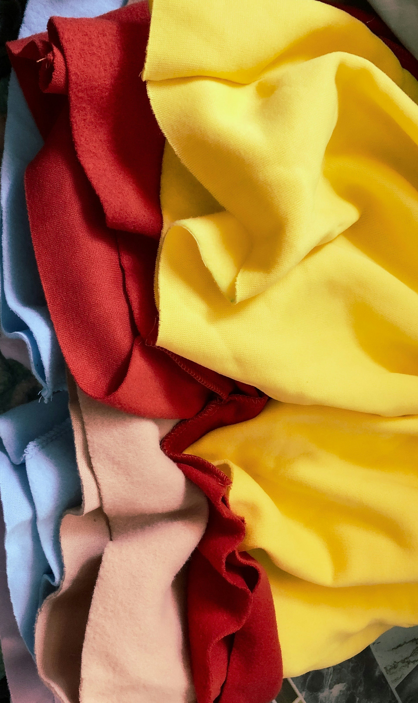
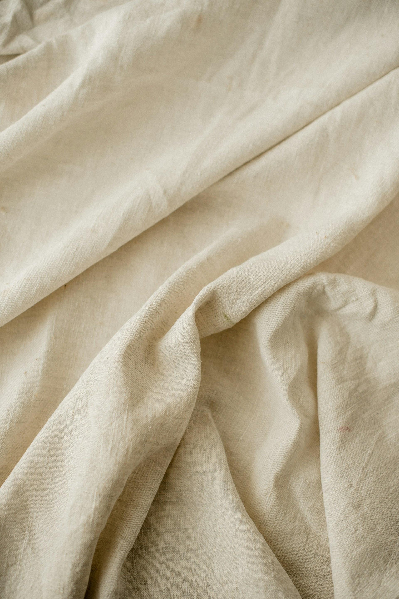
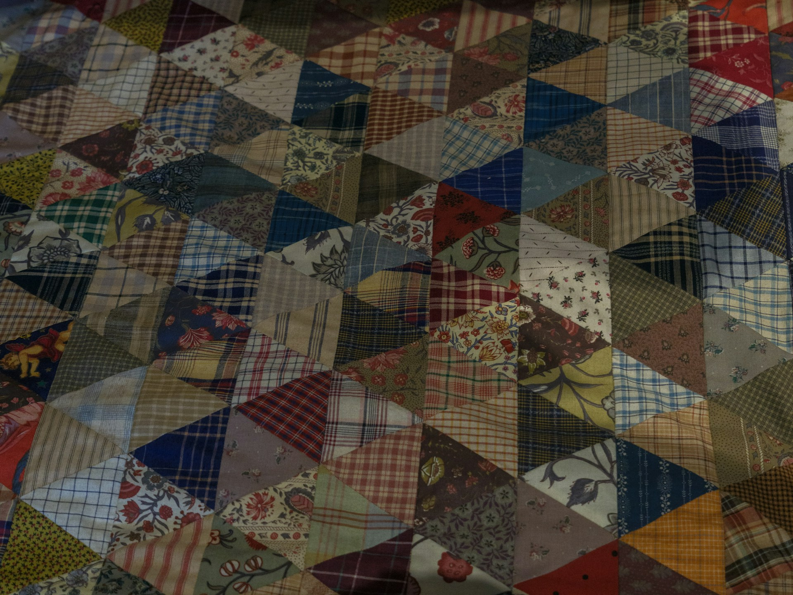
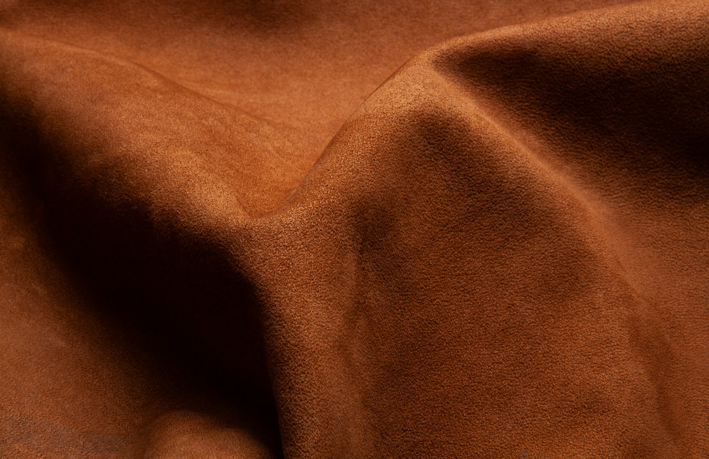
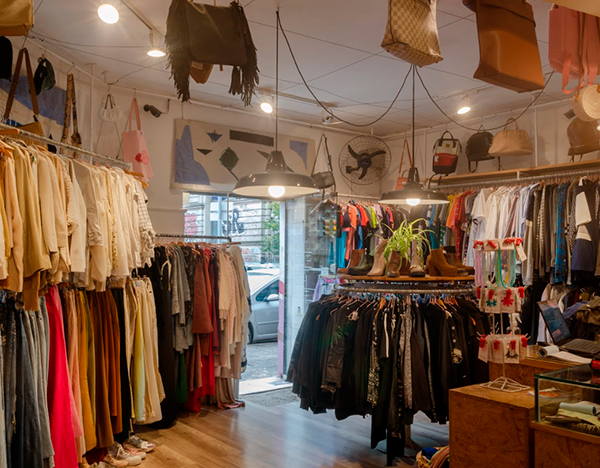
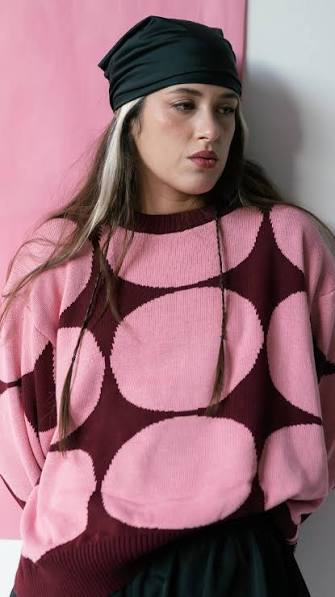
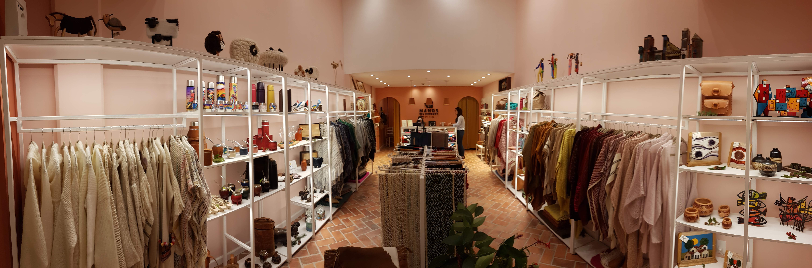
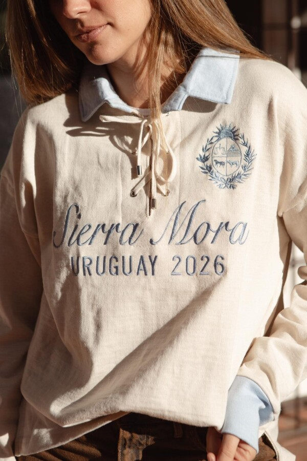

Algodón Orgánico
Cultivado con prácticas que reducen el uso de pesticidas sintéticos y favorecen un suelo más saludable.


Cultivado con prácticas que reducen el uso de pesticidas sintéticos y favorecen un suelo más saludable.

Resistente y biodegradable, requiere relativamente poca agua y puede convertirse en prendas duraderas.

Dan una segunda vida a fibras existentes y ayudan a reducir el uso de materias primas nuevas.

Biodegradable y extremadamente duradero, puede tener una vida útil muy larga y envejecer sin perder sus propiedades.
Del 22 al 25 de junio de 2026, Montevideo fue sede de la primera edición de este encuentro internacional, que reunió diseñadores, empresas y especialistas de Uruguay, Argentina, Paraguay y España. A través de distintas actividades, el evento promovió el intercambio de conocimientos y experiencias en torno a la moda sostenible, la innovación y la economía circular, posicionando a Uruguay como punto de encuentro para nuevas formas de pensar y transformar la industria.

Desde 2009, Recicla propone una alternativa al consumo tradicional de moda a través de prendas de segunda mano, diseño local y objetos sustentables. Su propuesta incorpora además reparación, reutilización y actividades vinculadas a la moda sostenible.
Visitar WebREcicla

Con sede en Montevideo, Estudio Kunst diseña y confecciona sus prendas en Uruguay, trabajando en pequeñas producciones para evitar la sobreproducción. Su propuesta combina diseño expresivo, funcionalidad y una mirada consciente sobre toda la cadena de producción.
Visitar WebKunst

Desde 1968, Manos del Uruguay trabaja junto a cooperativas de mujeres rurales que producen artesanalmente prendas y textiles. Su modelo vincula moda, oficio y desarrollo local, manteniendo vivas técnicas y saberes que forman parte de la identidad uruguaya.
Visitar WebManos

SierraMora busca equilibrar lo urbano y lo rural a través de una propuesta inspirada en la identidad del campo uruguayo. Su filosofía de producción lenta apuesta por prendas con carácter, pensadas para perdurar y alejadas de la lógica de la moda rápida.
Visitar WebSierraMora